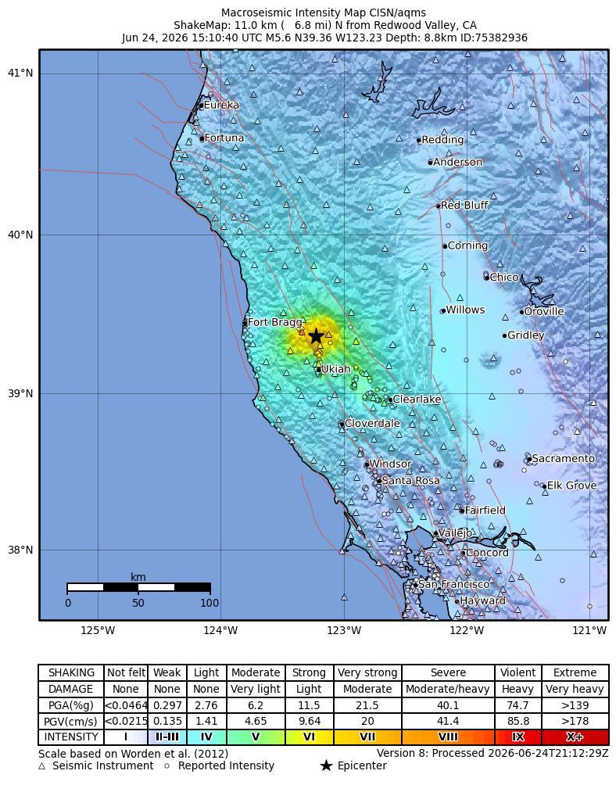
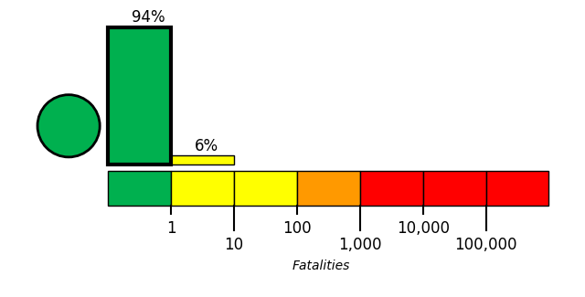
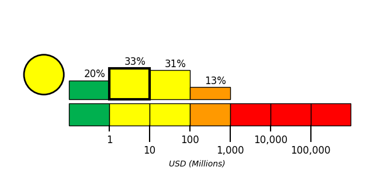

Introduction
On June 24, 2026, at approximately 1:10 local time, a magnitude 5.59 earthquake, with a depth of 8 km, struck 11 km North of Redwood Valley, CA. The coordinate of epicenter of the earthquake was 39.36N, 123.23W.
Data not available.

Building Damage
No information available for this section.
Infrastructure Impact
Officials stated that post-earthquake hazards can include leaking gas and water lines and downed power lines; the same statements also referenced potential damage to buildings, but no specific location, facility, service disruption, duration, or confirmed utility outage was provided in the facts [1][2].
Resilience and Recovery
Mendocino County officials reported that there had been no reports of damage or injuries following the earthquake, indicating that the documented community impact in the available reports was limited to the absence of reported casualties and damage at the time of reporting [3][4][5][6][7][8][9][10][11][12][13][14][15][16][17][18][19][20][21][22].
PAGER Estimates
USGS PAGER tool estimated the fatalities to be in the green alert level, which is most likely less than 1 with a probability of 94%.
USGS PAGER tool estimated the economic loss to be in the yellow alert level, which is most likely between 1 and 10 million dollars with a probability of 33%.


References
- [1] recentlyheard.com - https://recentlyheard.com/update-earthquake-of-2-8-magnitude-detected-near-johannesburg-ca-on-june-23
- [2] koranpangkep.co.id - https://www.koranpangkep.co.id/en/searles-valley-earthquake-rattles-inyo
- [3] kiro7.com - https://www.kiro7.com/news/trending/56-magnitude-earthquake-shakes-northern-california/LDAL4X2H3VGPBLL5PPZRDOJIVM
- [4] wsbtv.com - https://www.wsbtv.com/news/trending/56-magnitude-earthquake-shakes-northern-california/LDAL4X2H3VGPBLL5PPZRDOJIVM
- [5] boston25news.com - https://www.boston25news.com/news/trending/56-magnitude-earthquake-shakes-northern-california/LDAL4X2H3VGPBLL5PPZRDOJIVM
- [6] wsoctv.com - https://www.wsoctv.com/news/trending/56-magnitude-earthquake-shakes-northern-california/LDAL4X2H3VGPBLL5PPZRDOJIVM
- [7] wpxi.com - https://www.wpxi.com/news/trending/56-magnitude-earthquake-shakes-northern-california/LDAL4X2H3VGPBLL5PPZRDOJIVM
- [8] whio.com - https://www.whio.com/news/trending/56-magnitude-earthquake-shakes-northern-california/LDAL4X2H3VGPBLL5PPZRDOJIVM
- [9] wftv.com - https://www.wftv.com/news/trending/56-magnitude-earthquake-shakes-northern-california/LDAL4X2H3VGPBLL5PPZRDOJIVM
- [10] 971theriver.com - https://www.971theriver.com/news/trending/56-magnitude-earthquake-shakes-northern-california/LDAL4X2H3VGPBLL5PPZRDOJIVM
- [11] 97xonline.com - https://www.97xonline.com/news/trending/56-magnitude-earthquake-shakes-northern-california/LDAL4X2H3VGPBLL5PPZRDOJIVM
- [12] b985.com - https://www.b985.com/news/trending/56-magnitude-earthquake-shakes-northern-california/LDAL4X2H3VGPBLL5PPZRDOJIVM
- [13] 1055thedove.com - https://www.1055thedove.com/news/trending/56-magnitude-earthquake-shakes-northern-california/LDAL4X2H3VGPBLL5PPZRDOJIVM
- [14] kkyx.com - https://www.kkyx.com/news/trending/56-magnitude-earthquake-shakes-northern-california/LDAL4X2H3VGPBLL5PPZRDOJIVM
- [15] star945.com - https://www.star945.com/news/trending/56-magnitude-earthquake-shakes-northern-california/LDAL4X2H3VGPBLL5PPZRDOJIVM
- [16] wmmo.com - https://www.wmmo.com/news/trending/56-magnitude-earthquake-shakes-northern-california/LDAL4X2H3VGPBLL5PPZRDOJIVM
- [17] kissrocks.com - https://www.kissrocks.com/news/trending/56-magnitude-earthquake-shakes-northern-california/LDAL4X2H3VGPBLL5PPZRDOJIVM
- [18] hits973.com - https://www.hits973.com/news/trending/56-magnitude-earthquake-shakes-northern-california/LDAL4X2H3VGPBLL5PPZRDOJIVM
- [19] k991fm.com - https://www.k991fm.com/news/trending/56-magnitude-earthquake-shakes-northern-california/LDAL4X2H3VGPBLL5PPZRDOJIVM
- [20] y100fm.com - https://www.y100fm.com/news/trending/56-magnitude-earthquake-shakes-northern-california/LDAL4X2H3VGPBLL5PPZRDOJIVM
- [21] k923orlando.com - https://www.k923orlando.com/news/trending/56-magnitude-earthquake-shakes-northern-california/LDAL4X2H3VGPBLL5PPZRDOJIVM
- [22] 99jamzmiami.com - https://www.99jamzmiami.com/news/trending/56-magnitude-earthquake-shakes-northern-california/LDAL4X2H3VGPBLL5PPZRDOJIVM